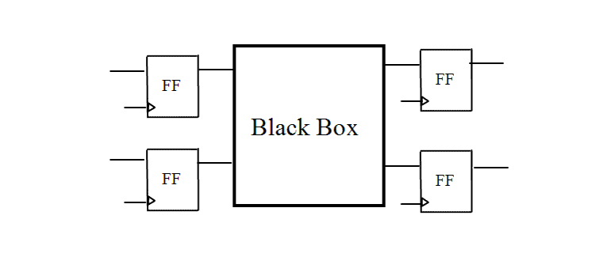

| Description | This rule fires when Leda detects input and output ports of a black box that are not connected to scan-flip-flops. Using controllable flip-flops to connect the inputs and outputs of black boxes makes them observable and controllable. This improves fault coverage, automatic test pattern generation (ATPG), and timing analysis on the signals connected to the black box. |
| Policy | DESIGN |
| Ruleset | DFT |
| Language | VHDL/Verilog |
| Type | Hardware |
| Severity | Error |
This is an example of valid Verilog code, followed by a circuit diagram that illustrates the correct approach:
module ntl_dft57_top; ... wire Din1_black, Din2_black, Dout1_black, Dout2_black; ... Black_box U0(.Din1(Din1_black), .Din2(Din2_black),.Dout1(Dout1_black), .Dout2(Dout2_black)); //DFF - flip-flop DFF U1(.D(Din1), .CP(Clock), .Q(Din1_black)); DFF U2(.D(Din2), .CP(Clock), .Q(Din2_black)); DFF U3(.D(Dout_1_black), .CP(Clock), .Q(Dout_1)); DFF U4(.D(Dout_2_black), .CP(Clock), .Q(Dout_1)); //add FFs to the inputs and outputs of Black Box ... endmodule module Black_box (Din1, Din2, Dout1, Dout2); input Din1, Din2; output Dout1, Dout2; endmodule